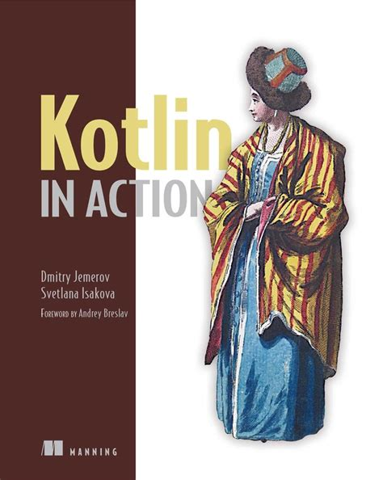
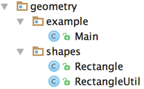
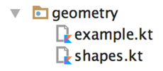
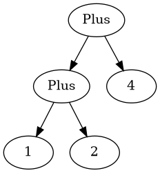

data class Person (val name: String,
val age: Int? = null)
fun main() {
val people = listOf(
Person("Alice"),
Person("Bob", age = 30)
)
val oldest = people.maxByOrNull { it.age ?: 0 }
println("Die älteste Person ist: $oldest")
}
main()
fun main(args: Array<String>) {
println("Hello World")
}
fun max(a: Int, b: Int): Int {
return if (a > b) a else b
}
max(1, 2)
fun max(a: Int, b: Int) = if (a > b) a else b
max(1, 2)
val frage = "Die ultimative Frage nach dem Leben," +
"dem Universum und dem ganzen Rest"
val antwort = 42
// alternativ
val antwort: Int = 42
var message = "test"
message = "reassigned"
message
val sprachen = arrayListOf("Java", "Clojure", "Scala")
sprachen.add("Kotlin")
sprachen.joinToString(", ")
Java, Clojure, Scala, Kotlin
val sprachen = listOf("Java", "Clojure", "Scala")
sprachen.add("Kotlin") // compile Fehler (keine add Methode)
sprachen.joinToString(", ")
fun main(args: Array<String>) {
val name = if (args.size > 0) {
args[0]
} else {
"Anonymous user"
}
println("Hello, $names!") // <=> "Hello, " + name + "!"
}
fun main(args: Array<String>) {
// <=> "Hello, " + (args.length > 0) ? args[0] : "Anonymous user" + "!"
println("Hello, ${if (args.size > 0) args[0] else "Anonymous user"}!")
}
public class Person {
private final String name; // in echt natürlich nicht final!
private boolean verheiratet;
public Person(String name, boolean verheiratet) {
this.name = name;
this.verheiratet = verheiratet;
}
public Person(String name) {
this(name, false);
}
// > 30 Zeilen getter/setter/toString/hashCode/equals
}
public static void printStatus(Person person) {
var infix = (person.isVerheiratet())
? ""
: "nicht ";
System.out.println(person.getName()
+ " ist "
+ infix
+ "verheiratet"
);
}
public static void main(String[] args) {
var person = new Person("Bob", false);
printStatus(person);
person.setVerheiratet(true);
printStatus(person);
}
data class Person(val name: String,
var isVerheiratet: Boolean = false)
fun printStatus(person: Person) {
// ruft tatsächlich getter auf
val infix = if (person.isVerheiratet) "" else " nicht"
println("${person.name} ist$infix verheiratet")
}
val person = Person("Bob", isVerheiratet = false)
printStatus(person)
person.isVerheiratet = true // ruft tatsächlich setter auf!
printStatus(person)
Bob ist nicht verheiratet
Bob ist verheiratet
class Person(val name: String,
private var verheiratet: Boolean = false) {
var isVerheiratet: Boolean
get() {
println("isVerheiratet hat wert $verheiratet")
return verheiratet
}
set(value) {
println("verheiratet = $value")
verheiratet = value
}
}
val person = Person("Bob", false)
printStatus(person)
person.isVerheiratet = true // ruft tatsächlich setter auf!
printStatus(person)
isVerheiratet hat wert false
Bob ist nicht verheiratet
verheiratet = true
isVerheiratet hat wert true
Bob ist verheiratet
class Rechteck(val breite: Int, val hoehe: Int) {
val isQuadrat: Boolean
get() = breite == hoehe
}
println(Rechteck(20, 20).isQuadrat) // true
println(Rechteck(30, 20).isQuadrat) // false
package geometrie.formen
import java.util.Random
class Rechteck(val breite: Int, val hoehe: Int) {
val isQuadrat: Boolean
get() = breite == hoehe
}
fun zufaelligesRechteck(): Rechteck {
val random = Random()
return Rechteck(random.nextInt(), random.nextInt())
}
println(zufaelligesRechteck().isQuadrat)

Figure 1: In Java müssen packages die Ordner Struktur reflektieren

Figure 2: In Kotlin ist das nicht der Fall
enum class Farbe {
ROT, ORGANGE, GELB, GRUEN, BLAU
}
enum class Farbe (val r: Int, val g: Int, val b: Int) {
ROT(255, 0, 0),
ORANGE(255, 165, 0),
GELB(255, 255, 0),
GRUEN(0, 255, 0),
VIOLET(238, 130, 238),
BLAU(0, 0, 255);
fun rgb() = (r * 256 + g) * 256 + b
}
Farbe.ORANGE.rgb()
fun getBeispielPflanze(farbe: Farbe) = when (farbe) {
Farbe.ROT -> "Tomate"
Farbe.ORANGE -> "Orange"
Farbe.GELB -> "Banane"
Farbe.GRUEN -> "Kiwi"
Farbe.VIOLET -> "Feige"
// Compilefehler wenn nicht alle möglichen Werte
// abgefragt werden
// Farbe.BLAU -> "Blaubeere"
}
fun getWaerme(farbe: Farbe) = when (farbe) {
Farbe.ROT, Farbe.ORANGE, Farbe.GELB -> "warm"
Farbe.GRUEN -> "neutral"
Farbe.BLAU, Farbe.VIOLET -> "kalt"
}
fun mix(f1: Farbe, f2: Farbe) = when(setOf(f1, f2)) {
setOf(Farbe.ROT, Farbe.GELB) -> Farbe.ORANGE
setOf(Farbe.GELB, Farbe.BLAU) -> Farbe.GRUEN
else -> throw Exception(
"Farben $f1 und $f2 können nicht vermischt werden"
)
}
mix(Farbe.BLAU, Farbe.GELB)
fun mixPerformant(f1: Farbe, f2: Farbe) = when {
(f1 == Farbe.ROT && f2 == Farbe.GELB)
|| (f1 == Farbe.GELB && f2 == Farbe.ROT)-> Farbe.ORANGE
(f1 == Farbe.GELB && f2 == Farbe.BLAU)
|| (f1 == Farbe.BLAU && f2 == Farbe.GELB)-> Farbe.GRUEN
else -> throw Exception(
"Farben $f1 und $f2 können nicht vermischt werden"
)
}
mixPerformant(Farbe.BLAU, Farbe.GELB)
interface Expr
class Zahl(val wert: Int): Expr
class Plus(val links: Expr, val rechts: Expr): Expr
Plus(Plus(Zahl(1), Zahl(2)), Zahl(4))

Figure 3: Ausdruck als Baum
fun eval(e: Expr): Int {
if (e is Zahl) {
// dieser cast ist redundant
val n = e as Zahl
return n.wert
}
if (e is Plus) {
// direkter Zugriff auf Felder nach 'is'
return eval(e.links) + eval(e.rechts)
}
throw IllegalArgumentException("Unbekannter Ausdruck")
}
eval(Plus(Plus(Zahl(1), Zahl(2)), Zahl(4)))
fun eval(e: Expr): Int = when(e) {
is Zahl -> e.wert
is Plus -> eval(e.links) + eval(e.rechts)
else -> throw IllegalArgumentException(
"Unbekannter Ausdruck"
)
}
eval(Plus(Plus(Zahl(1), Zahl(2)), Zahl(4)))
fun evalMitLog(e: Expr): Int = when(e) {
is Zahl -> {
println("Zahl: ${e.wert}")
e.wert
}
is Plus -> {
val links = evalMitLog(e.links)
val rechts = evalMitLog(e.rechts)
println("$links + $rechts")
links + rechts
}
else -> throw IllegalArgumentException(
"Unbekannter Ausdruck"
)
}
evalMitLog(Plus(Plus(Zahl(1), Zahl(2)), Zahl(4)))
Zahl: 1
Zahl: 2
1 + 2
Zahl: 4
3 + 4
var i = 0
while (i < 10) {
println(i)
i++
}
// 10 inklusive
val einsBisZehn = 1..10
// 10 ausgeschlossen
val einsBisNeun = 1 until 10
fun fizzBuzz (i: Int) = when {
i % 15 == 0 -> "FizzBuzz"
i % 3 == 0 -> "Fizz"
i % 5 == 0 -> "Buzz"
else -> "$i"
}
for (i in 1..20) {
print("${fizzBuzz(i)} ")
}
1 2 Fizz 4 Buzz Fizz 7 8 Fizz Buzz 11 Fizz 13 14 FizzBuzz 16 17 Fizz 19 Buzz
for (i in 100 downTo 1 step 2) {
print("${fizzBuzz(i)} ")
}
import java.util.TreeMap
// treemap ist ähnlich wie HashMap aber sortiert
val binaerDarstellungen = TreeMap<Char, String>()
for (c in 'A'..'F') {
binaerDarstellungen[c] = Integer.toBinaryString(c.toInt())
}
for ((buchstabe, binaer) in binaerDarstellungen) {
println("$buchstabe = $binaer")
}
A = 1000001
B = 1000010
C = 1000011
D = 1000100
E = 1000101
F = 1000110
val liste = arrayListOf("null", "eins", "zwei", "drei")
for ((index, element) in liste.withIndex()) {
println("$index: $element")
}
0: null
1: eins
2: zwei
3: drei
fun istBuchstabe(c: Char) = c in 'a'..'z' || c in 'A'..'Z'
fun istNichtZiffer(c: Char) = c !in '0'..'9'
istBuchstabe('q') // true
istNichtZiffer('q') // true
fun ermittleTyp(c: Char) = when (c) {
in '0'..'9' -> "Ziffer"
in 'a'..'z', in 'A'..'Z' -> "Buchstabe"
else -> "Keine Ahnung"
}
ermittleTyp('x') // Buchstabe
// Alphabetische Sortierung
println("Kotlin" in "Java".."Scala")
println("Kotlin" in setOf("Java", "Scala"))
true
false
import java.io.BufferedReader
import java.io.StringReader
fun parseZahl(reader: BufferedReader) = try {
Integer.parseInt(reader.readLine())
} catch (e: NumberFormatException) {
null
}
parseZahl(BufferedReader(StringReader("keine Zahl")))
val menge = setOf(1, 2, 3)
val liste = listOf(1, 2, 3)
val map = mapOf(1 to "one", 2 to "two", 3 to "three")
val strings = listOf("eins", "zwei", "drei")
println(strings.lastOrNull())
val zahlen = setOf(1, 42, 2)
println(zahlen.maxOrNull())
drei
42
import java.util.Optional;
public static Optional<Character> lastChar(String s) {
if (s == null || s.length() == 0) {
return Optional.empty();
}
return Optional.of(s.charAt(s.length() - 1));
}
public static void main(String args[]) {
System.out.println(lastChar("test")); // Optional.of('t')
System.out.println(lastChar("")); // Optional.empty()
}
fun String.lastChar() = getOrNull(length - 1)
println("test".lastChar()) // 't'
println("".lastChar()) // null